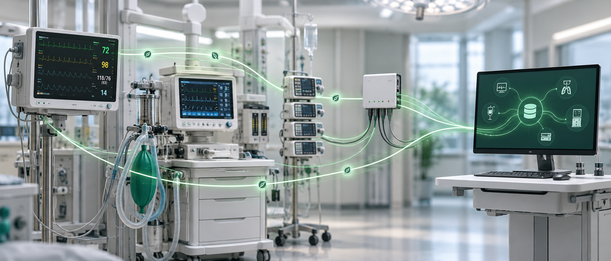

ไม่หยุดเมื่อเครือข่ายหยุดCare keeps moving offline
Leaf บันทึกที่ข้างเตียง แล้วซิงก์กลับเมื่อระบบพร้อมLeaf charts at the bedside and syncs when connectivity returns.
FLORA เชื่อมข้อมูลจากเครื่องมือแพทย์สู่ทีมดูแล โดยยังทำงานต่อได้แม้เครือข่ายสะดุดFLORA connects medical devices to care teams—and keeps charting when the network does not.
ออกแบบจากงานจริงในห้องผ่าตัดและ ICU ให้ข้อมูลเข้ามาเอง ใช้ต่อได้ และตรวจสอบย้อนหลังได้Designed around real OR and ICU workflows: automatic capture, local continuity and traceable records.
Leaf บันทึกที่ข้างเตียง แล้วซิงก์กลับเมื่อระบบพร้อมLeaf charts at the bedside and syncs when connectivity returns.
Monitor, anesthesia machine และ pump ในระบบเดียวMonitors, anesthesia machines and pumps—one flow.
ปรับแบบฟอร์ม รายงาน และ workflow ได้เองAdapt forms, reports and workflows in-house.
หน้าจอ แบบฟอร์ม รายงาน และเสียง รองรับสองภาษาBilingual screens, forms, reports and voice workflows.

เริ่มจากอุปกรณ์หนึ่งเครื่อง แล้วขยายได้ถึงทั้งโรงพยาบาลStart with one device, then scale across the hospital.